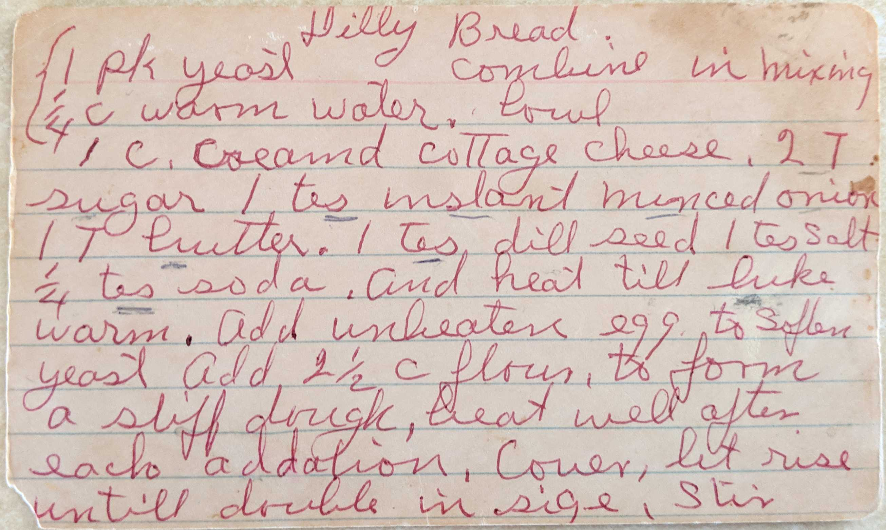
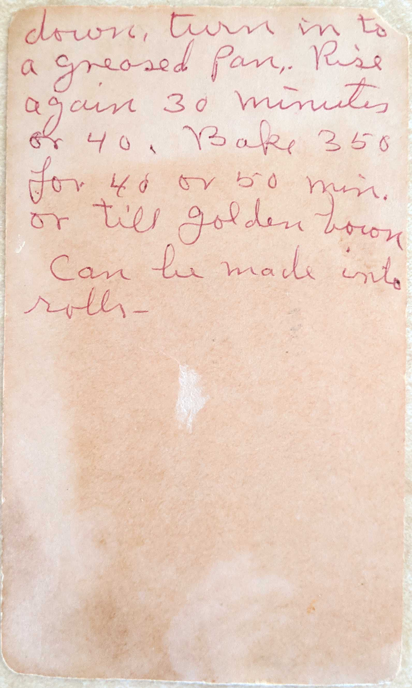

Dilly Bread
1 pk yeast 1/4 c warm water.
(combine in mixing bowl)
1 c. creamd cottage cheese. 2 T sugar
1 tes instant minced onion
1 T butter. 1 tes dill seed
1 tes salt 1/4 tes soda.
and heat till luke warm. Add unbeaten egg to soften yeast Add 2 1/2 C flour to form
a stiff dough, heat well after each addition. Cover, let rise untill double in size, Stir

down, turn in to a greased pan. Rise again 30 minutes or 40. Bake 350 for 40 or 50 min. or till golden brown Can be made into rolls.